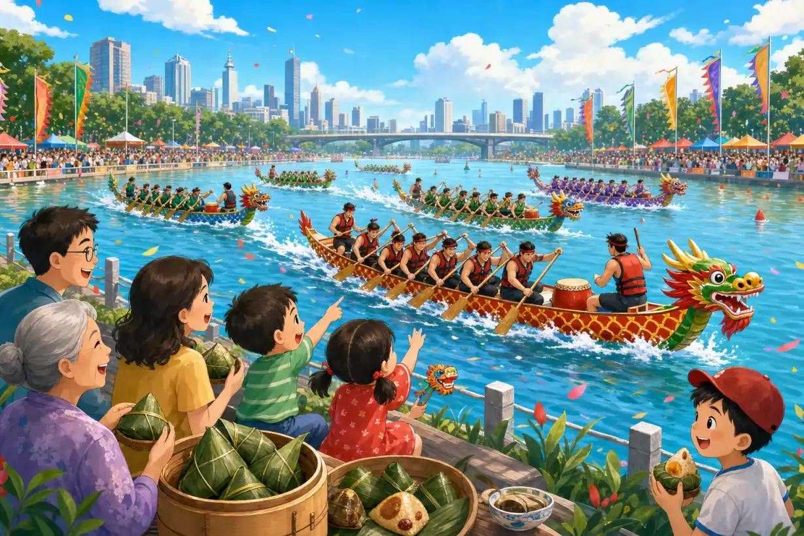

端午节
Dragon Boat Festival
Page 1
什么是端午节？
What Is the Dragon Boat Festival?

During Dragon Boat Festival, people eat zongzi, watch dragon boats, and in some places carry little scented bags.
端午节是中国很有名的传统节日。
每到初夏，很多人会吃粽子、看龙舟比赛，有些地方还会挂香包。
这个节日很热闹，也和一个古老的故事连在一起。
Dragon Boat Festival is a well-known traditional holiday in China.
In early summer, many people eat zongzi and watch dragon boat races. In some places, people also carry little scented bags.
It is a lively holiday, and it is also tied to an old story.
Page 2
屈原是谁？
Who Was Qu Yuan?

In the story, Qu Yuan often stands by the river, thinking about his country and its people.
很久以前，屈原是一个很关心国家和百姓的人。
他认真思考国家的事情，也常常给国王提建议，希望大家的生活能更安全一些。
可是后来，国王没有听进去，国家也变得越来越危险，屈原心里非常难过。
Long ago, Qu Yuan was a man who cared deeply about his country and the people.
He thought hard about the future and gave advice to the king, hoping life could become safer for everyone.
But later, the king did not listen, and the country fell into danger. Qu Yuan felt very sad.
Page 3
汨罗江边的故事
The Story by the Miluo River

In the legend, villagers rowed out in a hurry to look for Qu Yuan, calling his name as they went.
传说里，到了五月初五这一天，屈原来到汨罗江边，投进了江中。
附近的人知道以后，非常着急，马上划着小船去找他。
大家一边划船，一边叫着他的名字。江面上满是担心，也满是敬重。
In the legend, on the fifth day of the fifth lunar month, Qu Yuan came to the Miluo River and went into the water.
When the nearby villagers heard this, they hurried out in small boats to look for him.
As they rowed, they called his name again and again. The river was full of worry and respect.
Page 4
为什么要吃粽子、划龙舟？
Why Zongzi and Dragon Boats?
人们担心江里的鱼会碰到屈原，就把米团和食物扔进江里，希望鱼去吃那些食物。
后来，这些米团慢慢变成了今天的粽子。
人们急着划船找屈原的样子，也慢慢变成了后来的龙舟比赛。
所以一说到端午节，大家就会想到粽子和龙舟。
People were afraid the fish in the river might touch Qu Yuan, so they threw rice bundles and food into the water.
Over time, those rice bundles became the zongzi people eat today.
The hurried rowing of the villagers also slowly turned into the dragon boat races of later years.
That is why zongzi and dragon boats are the two things people remember most at Dragon Boat Festival.
Page 5
今天的龙舟比赛
Dragon Boat Racing Today

In dragon boat races today, drums beat loudly, the teams paddle together, and people on shore cheer.
今天，端午节还是一个很热闹的日子。
很多地方会举行龙舟比赛。鼓声咚咚响，队员们一起划船，动作又快又整齐。
所以端午节里，既有古老的故事，也有今天大家一起参加的节日活动。
Today, Dragon Boat Festival is still a lively day of celebration.
In many places, people hold dragon boat races. The drums boom, the teams paddle together, and every move is fast and strong.
So this holiday carries both an old story and a festival people still enjoy together today.
端午安康
Peace and Health at Dragon Boat Festival
说到端午节，人们会想到粽子、龙舟，也会想到屈原。
这个节日告诉大家，有些很古老的故事，今天还活在我们的生活里。
When people talk about Dragon Boat Festival, they think of zongzi, dragon boats, and Qu Yuan.
This holiday reminds us that some very old stories still live in everyday life today.